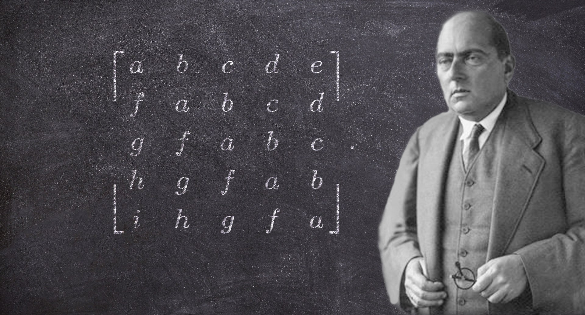
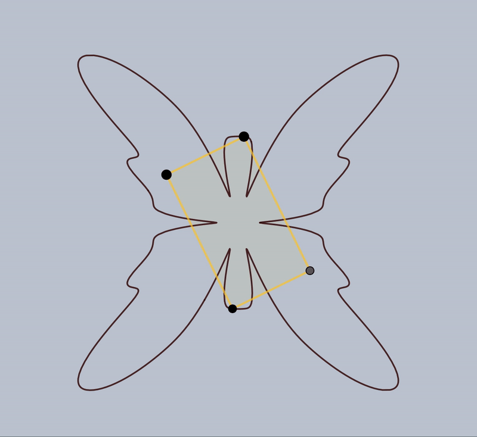

Te damos la bienvenida

Conjetura de Toeplitz
Consulta demostraciones a casos particulares de la conjetura de Toeplitz, así como una breve introducción al problema

Rectángulos inscritos
Consulta una demostración a la conjetura de Toeplitz aplicada a rectángulos

Triángulos inscritos
Consulta una demostración a la conjetura de Toeplitz aplicada a triángulos

Preguntas y ejercicios
Consulta ejercicios y preguntas relacionadas a la conjetura de Toeplitz